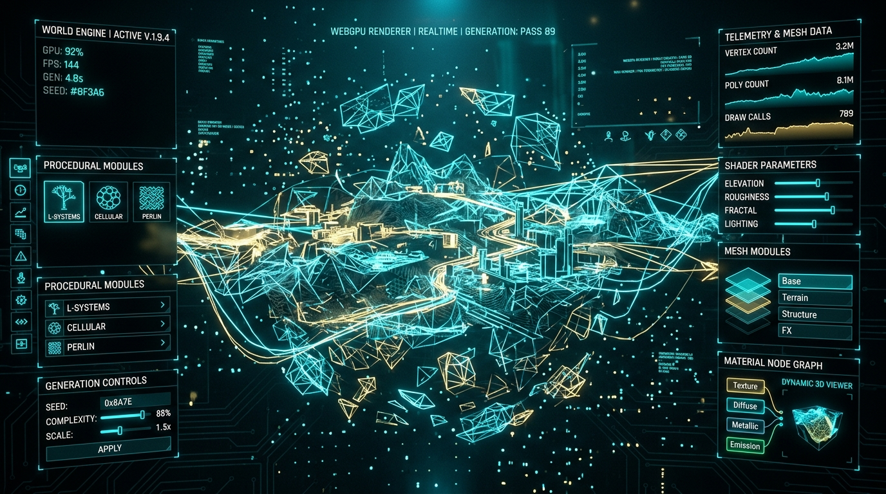
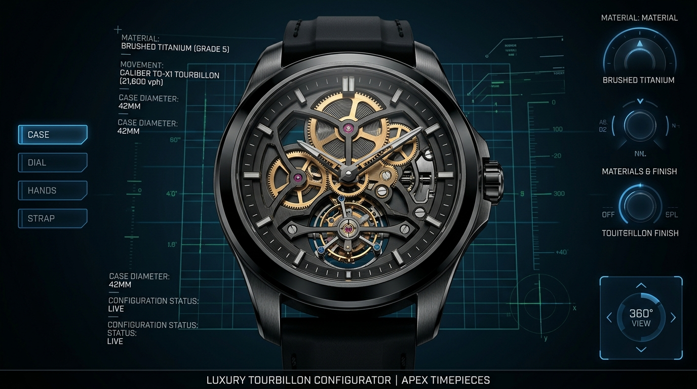
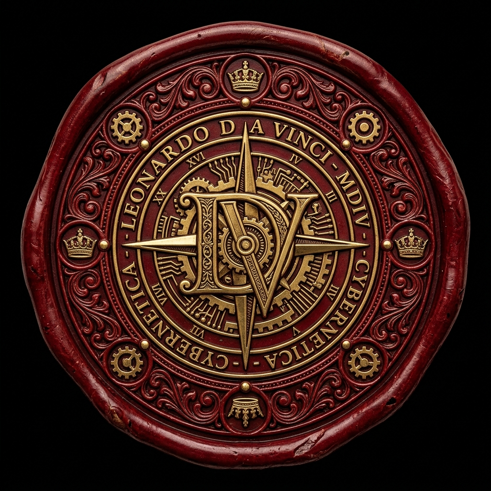

Инженерия как высшая форма искусства.
Я соединяю математическую строгость Computer Science, кинематографичную эстетику 3D/WebGL и бескомпромиссную плавность отклика в 120 FPS.

WEBGPU REALTIMEAetheria 3D Spatial Engine
Процедурный генератор 3D-миров нового поколения на чистом WebGPU с объемным светом и кинематикой частиц.

LUXURY CONFIGURATORChronos Tourbillon Atelier
3D-конфигуратор сложных швейцарских хронометров с физически точным преломлением сапфирового стекла.
Готовы создать продукт, о котором будут говорить во всех дизайн-каналах и Twitter? Нажмите на сургучную печать для инициации связи:
